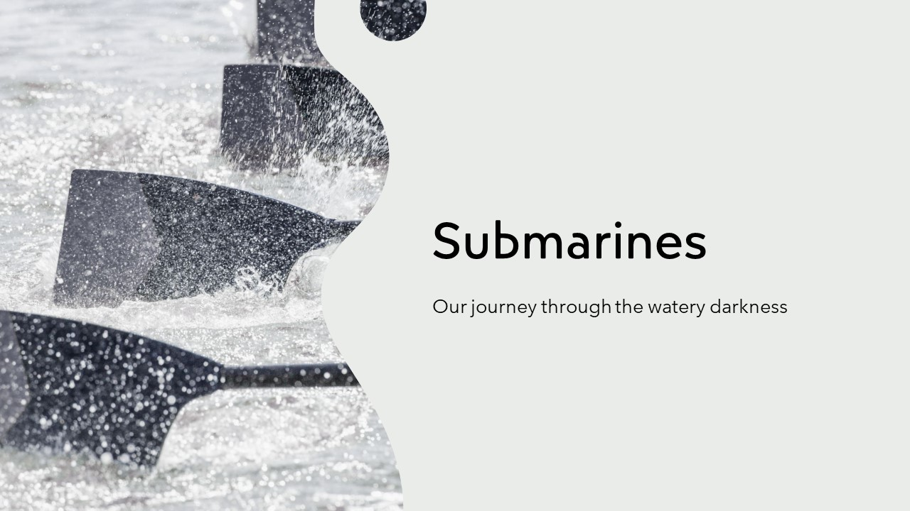

Table of contents |
|---|
| Abstract |
| Analysis and discussion |
| References |
Abstract
Submarines are tools for which humanity uses to explore the high-pressure depths of the oceans. They require precise calculations and important parts to it so that the crew, the submarine itself and whatever
cargo they carry is safe unless all of these listed will be crushed by the pressure of being that deep underwater such as the "Titanic" sub that was poorly constructed causing the death of 5 people who
trusted the manufacturers who constructed it. This implosion is a case why the structure of the submarine is important, to explore underwater safely without fear of implosion. The way everything has to be laid out
so those that live in the submarines can survive and that it has to be airtight to prevent the submarine from inbalance of mass and prevent from sinking. The history of the submarine spans multiple decades of human
history from Leonardo Da Vinci to John Philip Holland, these people contributed to underwater exploration and paved the path to the modernly used submarines in active use to this very day. Submarines can explore
depths, they could be used to investigate maybe important discoveries that may forward the progress humanity such as finding maybe a cure to a diesease only found in the depths. This is a dream that is almost found
into fruition however due to reduced construction cost to profit, submarines are less built safetly but instead cutting corners and doing it poorly such as disregarding advice from another company . (MTS,2018)
Analysis and discussion
Submarines are feats of engineering, allowing humanity the ability to glimpse into the darkness of our planets oceans. Submarine's are used to explore the deepdepths of Earth's ocean, in order to do this, they
need to be designed to withstand the high pressure exerted on the craft, be airtight to prevent the craft to sink permanately and make it so it has the correct buoyancy for submerging and surfacing. The first
proper submarine to be designed was in "1578 by a person by the name of William Bourne. He designed the craft to be a wooden frame covered with waterproof leather."(Polmar,2023) This was the start to perfecting
the design of the as later on "in 1747 an unidentified man proposed an idea where goat skins were attached to the hull of the craft connected to an aperture at the bottom of the craft, the plan was to fill the
goat skin with water to allow the craft to sink and then when wanting to resurface, a tool called the "twisting rod" is used to force the water out of the skin"(Polmar,2023). These first two designs lead the
way in the desire to do deeper, to uncover the mysteries our world still keep secret. Submarines are all useful as it allows for the research of unknown, marinebiologist can study species that would otherwise
have been impossible to have studied or less scientific purposes. Submarines can be used for war, as containers for dangerous weapons and placed into places of tatical importance to act as either a detterent
or used to combat against hostile ships and hostile submarines. If it can be used in a safe way, they can be used for leisure and can be used to show the life of the depths to tourists or those merely curious.
Modern submarines work by filling part of some of the ship with water to allow for the ship to sink, the parts that are filled with water are called "Ballast tanks" and "Trim tanks", The ballast tanks are
primarily located at the front, back and centre of the submarine. Ballast tanks were implemented when a man by the name of "David Bushneil of Connecticut" added a manual pump in his submarine named the TURTLE
which allows for the water ballast to be ejected from it.(Pohler,1969) This method inspired other designers as afterward, many would use the similar configuration within their submarine with less manual versions.
Afterwards, they added on-board air-compressors, these were manually used to recharge high pressure air banks, the earliest recording for when the air-compressor were used for blowing Ballast tanks is credited to
a submarine by the name of "Le Plongeur" in 1863. "This ship, designed by Brun and Bourgeois, carried large quantities of air stored at 180 psi, and used compressed air for propulsion"(Pohler,1969)
 (Pohler,1969) "Le Plonguer" one of the first designed with mechanical propulsion.
It was meant to be used as a stealth submarine used to ram into other large vhicles with its tip to cause large holes in its hull. Submarines require precise calculations to calculate how much it requires to submerge
and surface as well as keeping enough air in the submarine so those working in said submarine are able to breathe and work to maintain the submarine so it does not have a malfunction and can perform its intended purpose.
If the submarines were built poorly, the damage it would cause will be catastrophic, everyone in the submarine would be crushed by the weight of the water causing an implosion where the submarine would be crushed
completely killing everyone inside.(Kiciński,2021) The structure of the submarine is laid out the way it is due to America wanting to find out the optimal shape and structure to allow the subamarine to manouver in the
water effectively becomeing to be known as the "Albacore trials", from these they discovered that "a streamlined body of revolution with a blunt rounded nose and tapering conical tail" to be the most optimal design for
it.(Burcher,1994) Submarines are powered by nuclear fission and are dependent on the loads of which the submarines carry requiring a 35% of weight and 50% of mass for the energy production only for the submarine to
perform. Before we had nuclear power we were unable to traverse deep undersea as the submarine would lose its power quickly, with the implementation of nuclear power, it allowed submarines to be submerged for extended
periods of time allowing it to work correctly as long as intended. Not all space was used for power some of it can be used for floodable tankage and people, in the external part of the hull, they can store equipment
such as sonars, torpedos and more along this line.(Burcher,1994)
Some submarines were used for scientific purpose and had the same design as the other submarines, the only difference is that these submarines have glass for some parts of its hull, this is to allow for observation
of the deep sea without being drowned, this is actually better if they made it so the submarine is shaped more like a small ball, losing the length of time it can stay submerged but allowing for a 360 degree view of
the ocean allowing researchers to observe the life that can live at such depths without worrying how to manouver a large craft, this does cause some downsides such as less breathable air and less time at such
high pressures. If there is a fault in any of the designs of the submarine such as there may crack, this could cause catastrophic failure and may cause the submarine to implode or fill with water drowning the crew
inside, such as what occured with the "Titan" submarine in 2023, where they were confident in their design of the submarine, they did not test if it was ready for release and because of an unknown issue, the
submarine imploded.
(Pohler,1969) "Le Plonguer" one of the first designed with mechanical propulsion.
It was meant to be used as a stealth submarine used to ram into other large vhicles with its tip to cause large holes in its hull. Submarines require precise calculations to calculate how much it requires to submerge
and surface as well as keeping enough air in the submarine so those working in said submarine are able to breathe and work to maintain the submarine so it does not have a malfunction and can perform its intended purpose.
If the submarines were built poorly, the damage it would cause will be catastrophic, everyone in the submarine would be crushed by the weight of the water causing an implosion where the submarine would be crushed
completely killing everyone inside.(Kiciński,2021) The structure of the submarine is laid out the way it is due to America wanting to find out the optimal shape and structure to allow the subamarine to manouver in the
water effectively becomeing to be known as the "Albacore trials", from these they discovered that "a streamlined body of revolution with a blunt rounded nose and tapering conical tail" to be the most optimal design for
it.(Burcher,1994) Submarines are powered by nuclear fission and are dependent on the loads of which the submarines carry requiring a 35% of weight and 50% of mass for the energy production only for the submarine to
perform. Before we had nuclear power we were unable to traverse deep undersea as the submarine would lose its power quickly, with the implementation of nuclear power, it allowed submarines to be submerged for extended
periods of time allowing it to work correctly as long as intended. Not all space was used for power some of it can be used for floodable tankage and people, in the external part of the hull, they can store equipment
such as sonars, torpedos and more along this line.(Burcher,1994)
Some submarines were used for scientific purpose and had the same design as the other submarines, the only difference is that these submarines have glass for some parts of its hull, this is to allow for observation
of the deep sea without being drowned, this is actually better if they made it so the submarine is shaped more like a small ball, losing the length of time it can stay submerged but allowing for a 360 degree view of
the ocean allowing researchers to observe the life that can live at such depths without worrying how to manouver a large craft, this does cause some downsides such as less breathable air and less time at such
high pressures. If there is a fault in any of the designs of the submarine such as there may crack, this could cause catastrophic failure and may cause the submarine to implode or fill with water drowning the crew
inside, such as what occured with the "Titan" submarine in 2023, where they were confident in their design of the submarine, they did not test if it was ready for release and because of an unknown issue, the
submarine imploded.
References
Polmar, N. (2023) Submarine. Available at: https://www.britannica.com/technology/submarine-naval-vessel (Accessed: 18/10/2023).
Pohler, C. (1969) SUBMARINE MAIN BALLAST TANKS - THEORY AND METHODS FOR REFINED STRUCTURAL DESIGN. Bureau of ships: Mar Technol SNAME N 6.
MTS. (2018) Title of report. MTS. Unpublished.
Kiciński , R. (2021) Analysis of the possibility of a submarine implosion using finite element method. Available at: https://iopscience.iop.org/article/10.1088/1742-6596/2130/1/012006/pdf (Accessed: 02/11/2023).
Burcher, R. and Rydill, L. J. (1994) “Submarine hydrostatics,” In Concepts in Submarine Design, Cambridge Ocean Technology Series, chapter, Cambridge, Cambridge University Press, pp. 25–51.
Conference presentation: Subamrines
